در این قسمت، نمودارها نشان میدهند که بین تمام مبدا مقصد های مختلف چه میزان دیتا موجود هست، تا یا یک دید کلی از مبدا مقصدهایی که میتوانند گزینه های مناسب مدلسازی باشن آشنا شویم، هرچه نمودار سبز تر باشد یه معنای وجود دیتای بیشتری هست.
نمودار فرودگاه آبادان:
نمودار فرودگاه آبادان بخش اول:
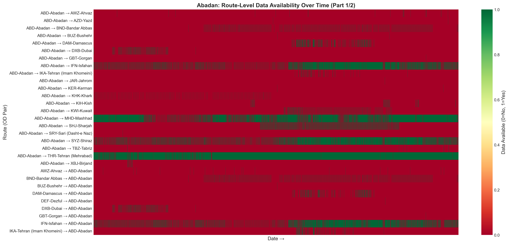Abadan_route_heatmap_part1.png
نمودار فرودگاه آبادان بخش دوم:
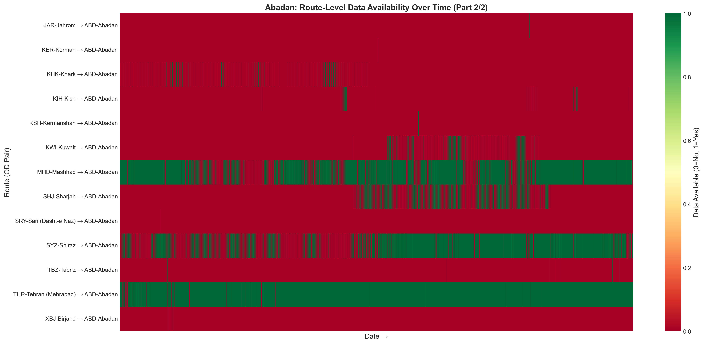Abadan_route_heatmap_part2.png
نمودار زیر تعداد پرواز در هر روز در فرودگاه آبادان را مشخص می کند همچنین نشان میدهد که چه تعداد روز از این فرودگاه هیچ دیتایی نداریم:
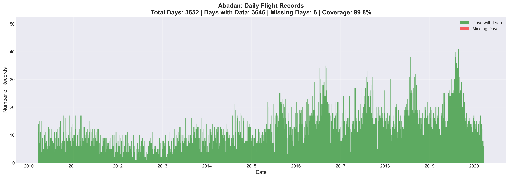Abadan_temporal_coverage.png
خلاصه ای از وضعیت داده های آبادان:
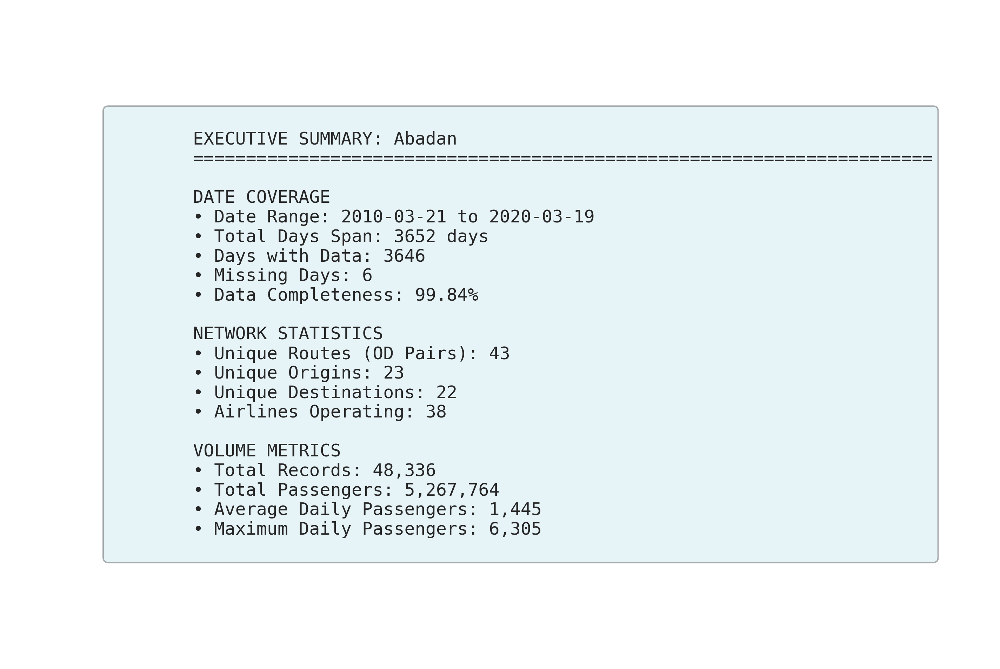Abadan_summary.png
نمودار فرودگاه اصفهان:
نمودار فرودگاه اصفهان بخش اول:
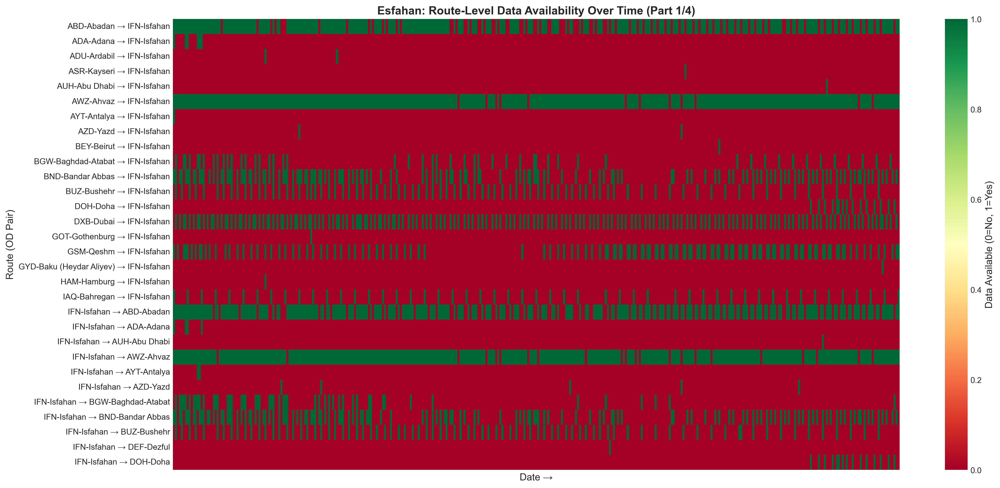Esfahan_route_heatmap_part1.png
نمودار فرودگاه اصفهان بخش دوم:
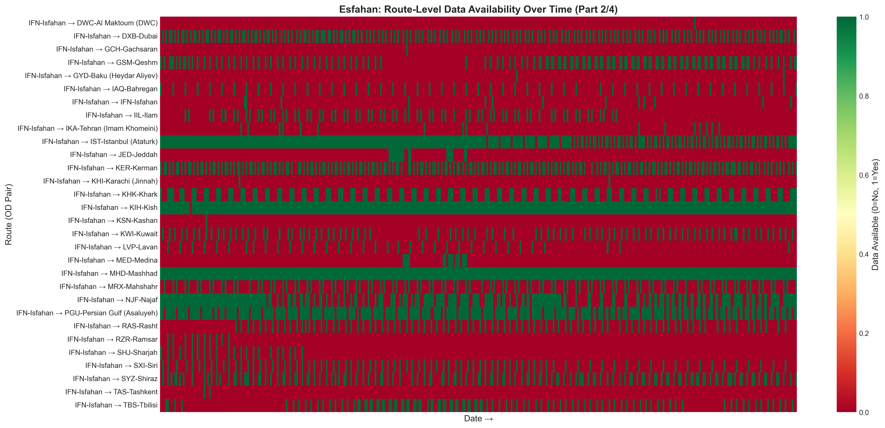Esfahan_route_heatmap_part2.png
نمودار فرودگاه اصفهان بخش سوم:
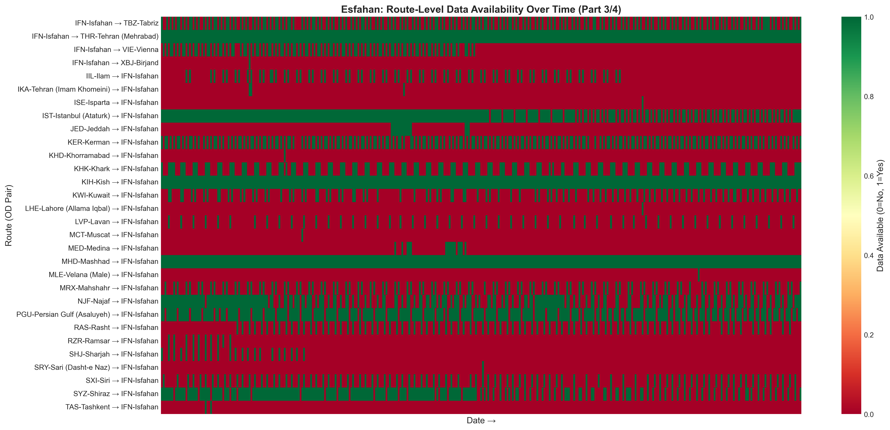Esfahan_route_heatmap_part3.png
نمودار فرودگاه اصفهان بخش چهارم:
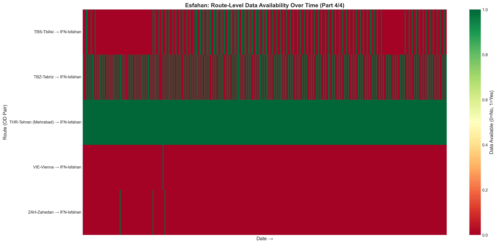Esfahan_route_heatmap_part4.png
نمودار زیر تعداد پرواز در هر روز در فرودگاه اصفهان را مشخص می کند همچنین نشان میدهد که چه تعداد روز از این فرودگاه هیچ دیتایی نداریم:
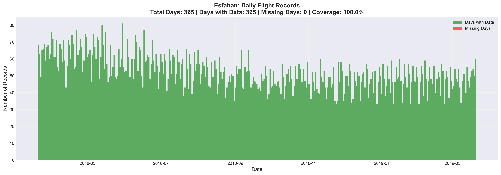Esfahan_temporal_coverage.png
خلاصه ای از وضعیت داده های اصفهان :
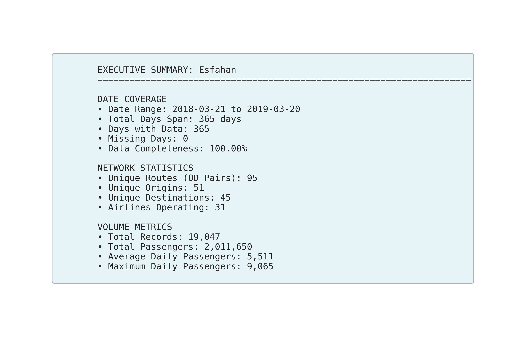Esfahan_summary.png
نمودار فرودگاه تبریز:
نمودار فرودگاه تبریز بخش اول:
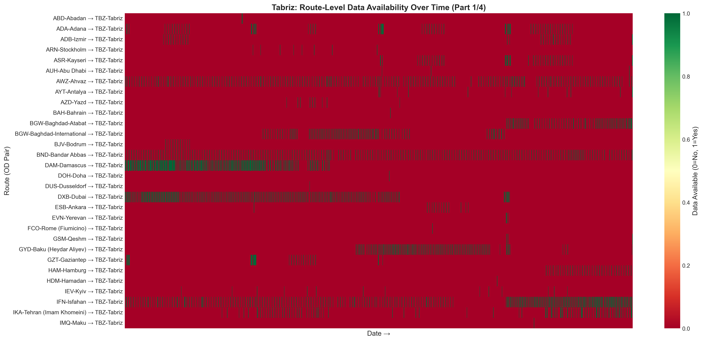Tabriz_route_heatmap_part1.png
نمودار فرودگاه تبریز بخش دوم:
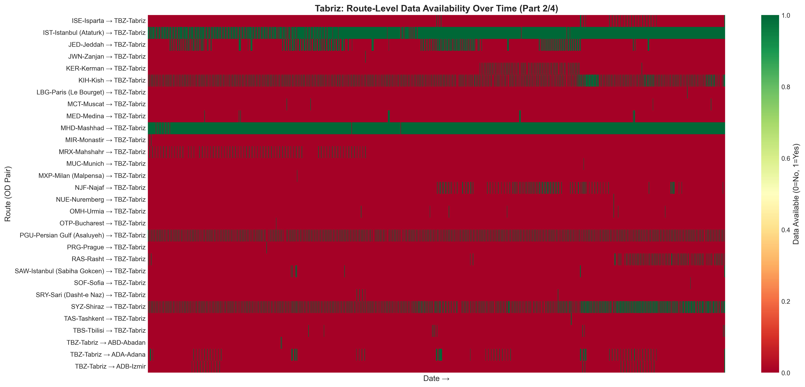Tabriz_route_heatmap_part2.png
نمودار فرودگاه تبریز بخش سوم:
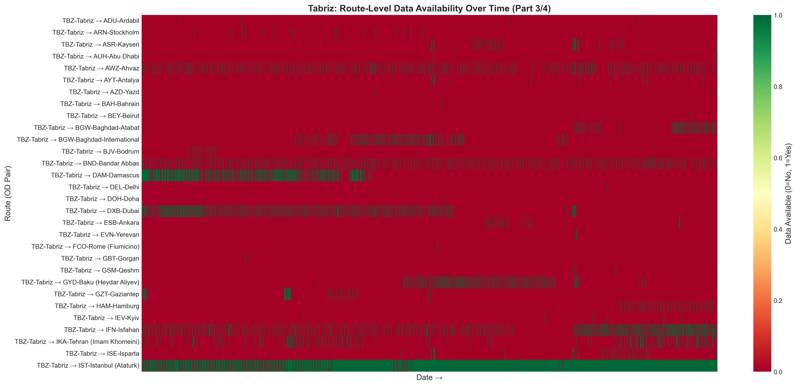Tabriz_route_heatmap_part3.png
نمودار فرودگاه تبریز بخش چهارم:
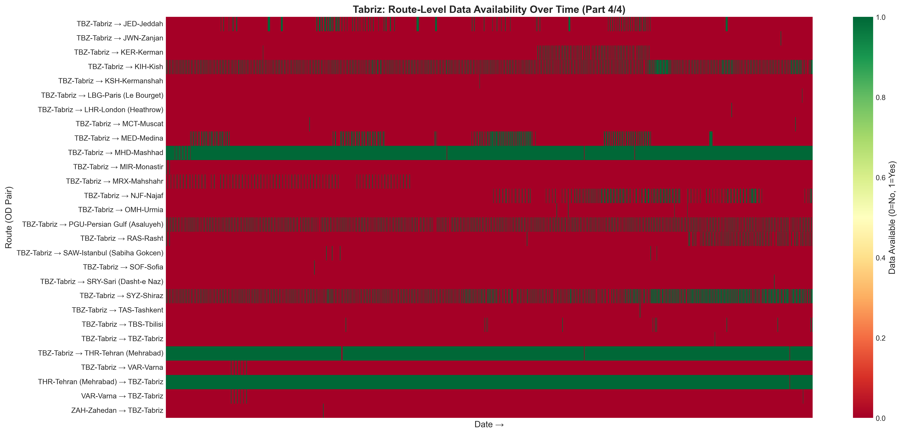Tabriz_route_heatmap_part4.png
نمودار زیر تعداد پرواز در هر روز در فرودگاه تبریز را مشخص می کند همچنین نشان میدهد که چه تعداد روز از این فرودگاه هیچ دیتایی نداریم:
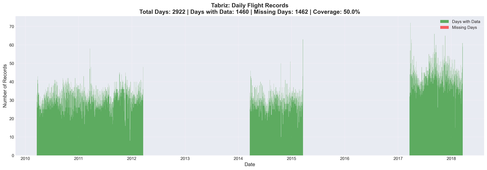Tabriz_temporal_coverage.png
خلاصه ای از وضعیت داده های تبریز :
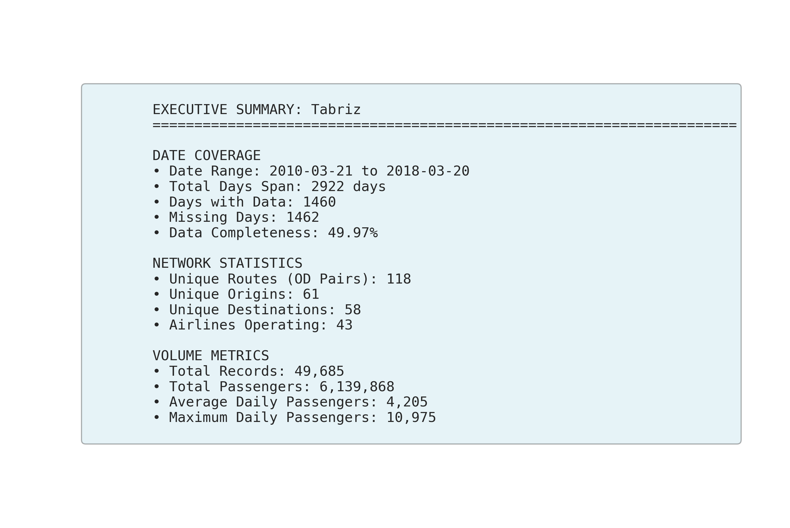Tabriz_summary.png